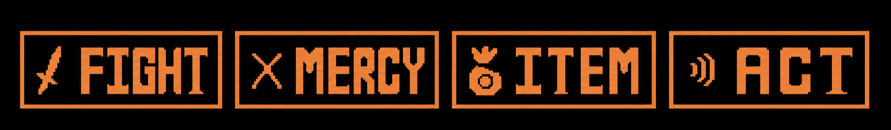

HOME/ |
FRISK/ |
BOSSES/ |
AÇÕES/ |
CRIADOR |

AÇÕES
Em Undertale, as ações são comandos usados durante as batalhas que permitem interagir com os inimigos de formas diferentes. A opção FIGHT serve para atacar, ACT permite conversar, elogiar, provocar ou realizar ações específicas para cada monstro, ITEM usa objetos do inventário para recuperar vida ou obter vantagens, e MERCY permite poupar inimigos ou fugir da batalha quando certas condições são cumpridas. Essas mecânicas tornam possível terminar o jogo sem derrotar nenhum monstro, dependendo das escolhas do jogador.

EXPLICAÇÃO DETALHADA
Em Undertale, o sistema de ações durante as batalhas é um dos elementos mais importantes do jogo. Em vez de apenas derrotar os inimigos, o jogador pode escolher diferentes comandos que influenciam diretamente o rumo do combate e da história. Cada decisão tomada afeta a forma como os personagens reagem e pode alterar o final da aventura.
FIGHT: é utilizado para atacar os monstros. Ao escolhê-lo, aparece uma barra em movimento, e quanto mais próximo do centro o jogador acertar, maior será o dano causado. Embora seja o método mais rápido para vencer uma batalha, eliminar monstros influencia a narrativa e pode mudar significativamente a experiência do jogo.
ACT: permite interagir pacificamente com os inimigos. Cada monstro possui ações exclusivas, como conversar, elogiar, acariciar, contar piadas ou fazer um desafio. Descobrir a combinação correta de ações pode acalmar o adversário, fazê-lo desistir da luta ou até se tornar amigável, permitindo que seja poupado.
ITEM: abre o inventário do jogador. Nele é possível usar alimentos e outros objetos para recuperar pontos de vida durante o combate. Alguns itens possuem efeitos especiais, aumentam a cura em determinadas batalhas ou provocam reações únicas em certos personagens.
MERCY: permite poupar ou fugir da batalha. Quando o nome do inimigo fica amarelo, significa que ele está pronto para ser poupado. Em alguns confrontos também é possível escapar usando a opção Flee. Essa mecânica é a base da Rota Pacifista, mostrando que nem toda batalha precisa ser vencida pela violência e reforçando a mensagem central de